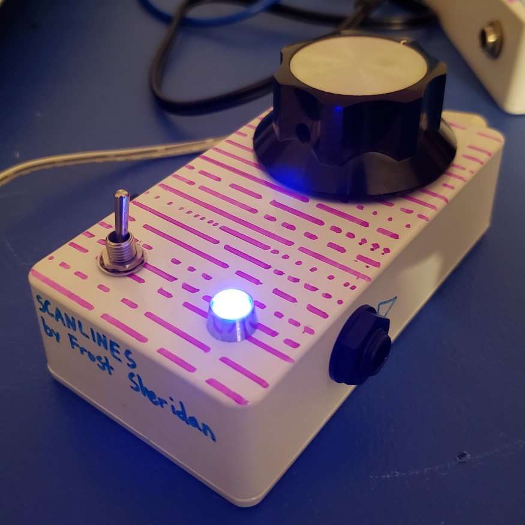
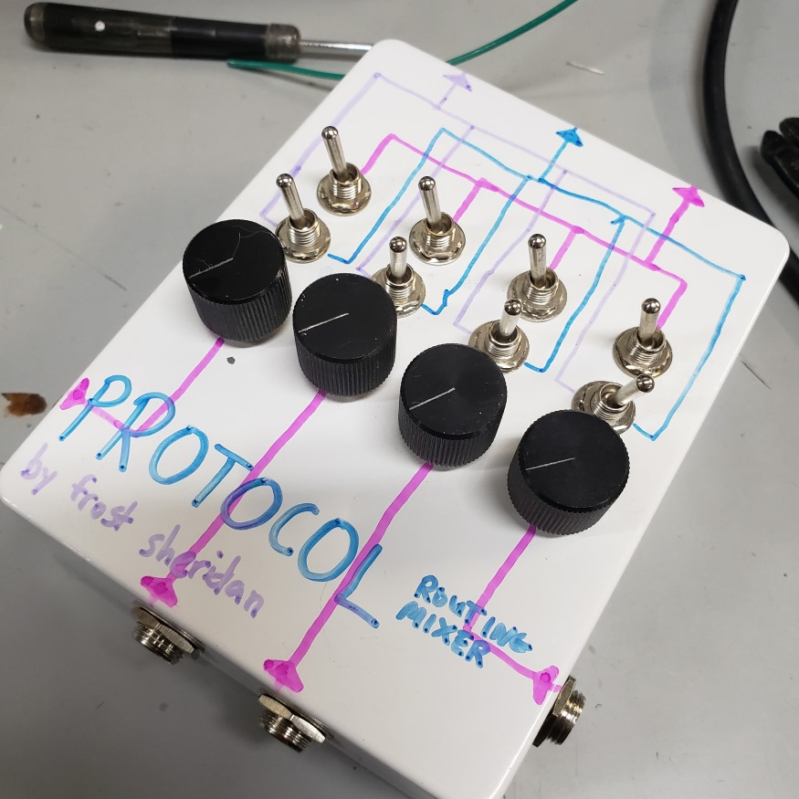
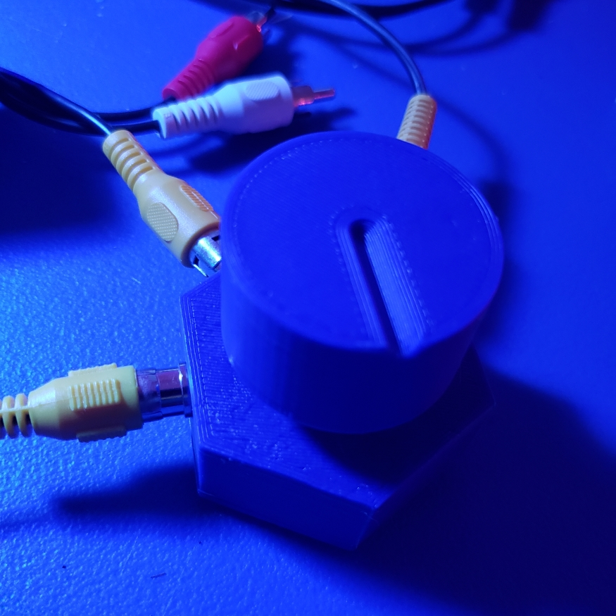

frost sheridan
projects

Scanlines
analog sample rate reduction (bitcrusher) effect

Protocol
passive mixer with various signal routing options

Video Hecker
stupid device that messes up analog video signals